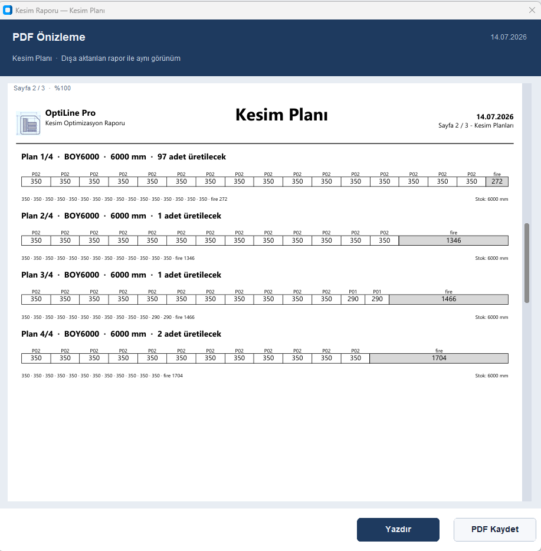

Ürün yapısı
Üretim için sade, satış için güçlü bir platform.
OptiLine Pro masaüstü programı üretimde çalışır; web tarafı lisans, indirme ve müşteri yönetimini taşır. Böylece ürün büyüdükçe kontrol dağılmaz.
Masaüstü program üretim işini yapar.
Optimizasyon, stok seçimi, rapor, PDF ve üretim çıktıları kullanıcının bilgisayarında hızlı çalışır. Site tarafı programı yönetir; kesim motorunun içine gereksiz panel yükü bindirmez.
Tek giriş ekranıProje, profil, stok danışmanı ve levha modülleri aynı ana yapıdan açılır.
Yetkiye göre modülLisans açık değilse modül kapalı kalır veya belirlenen limitte çalışır.
Rapor odaklı çıktıKesim planları, analiz özetleri ve PDF çıktıları satış sonrası belgeye dönüşür.

Bileşenler
Dağınık değil, görevleri ayrılmış yapı.
Kurulum, lisans doğrulama ve sürüm yayınlama ayrı görevlerdir. Bunları ayırmak programı daha temiz ve daha güvenilir yapar.
OptiLine Pro
Asıl kesim ve optimizasyon programı.
OptiLine Launcher
Güncelleme kontrolü, indirme, doğrulama ve programı başlatma görevi.
Web Panel
Müşteri, admin, lisans isteği ve sürüm yayınlama ekranları.
API / Sunucu
Lisans üretimi ve doğrulaması için gerçek güvenli merkez.